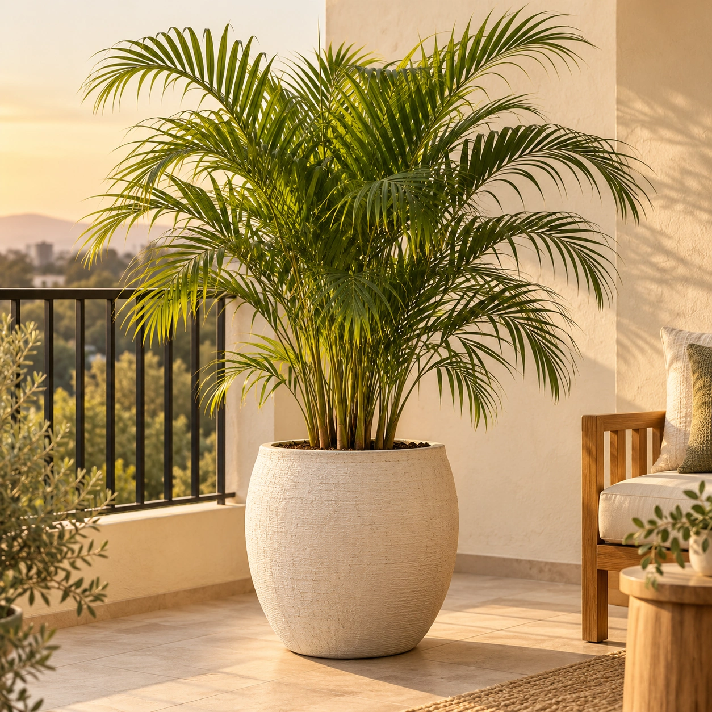
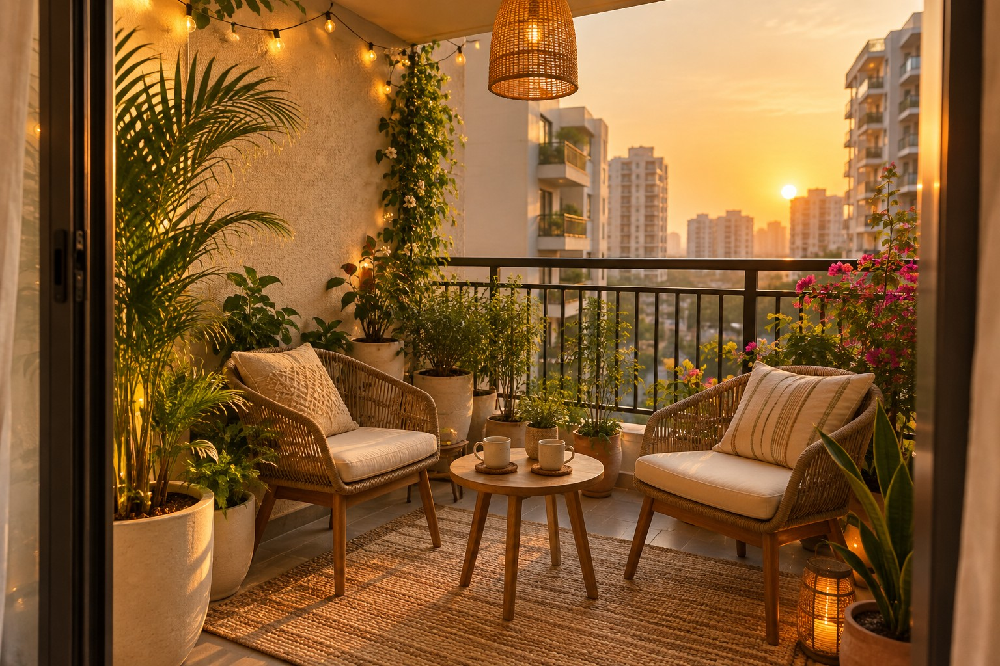
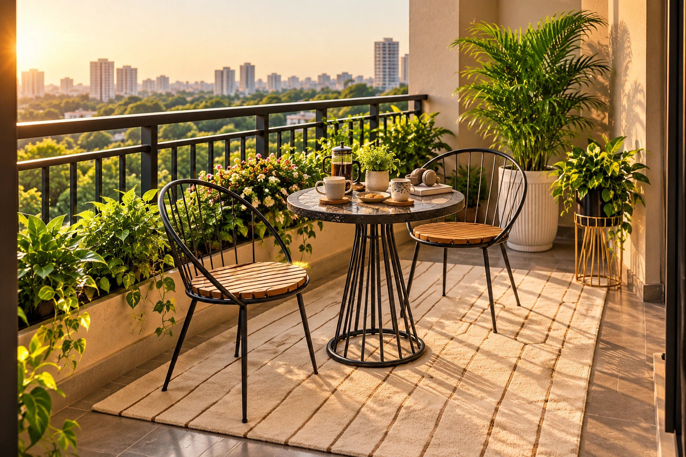
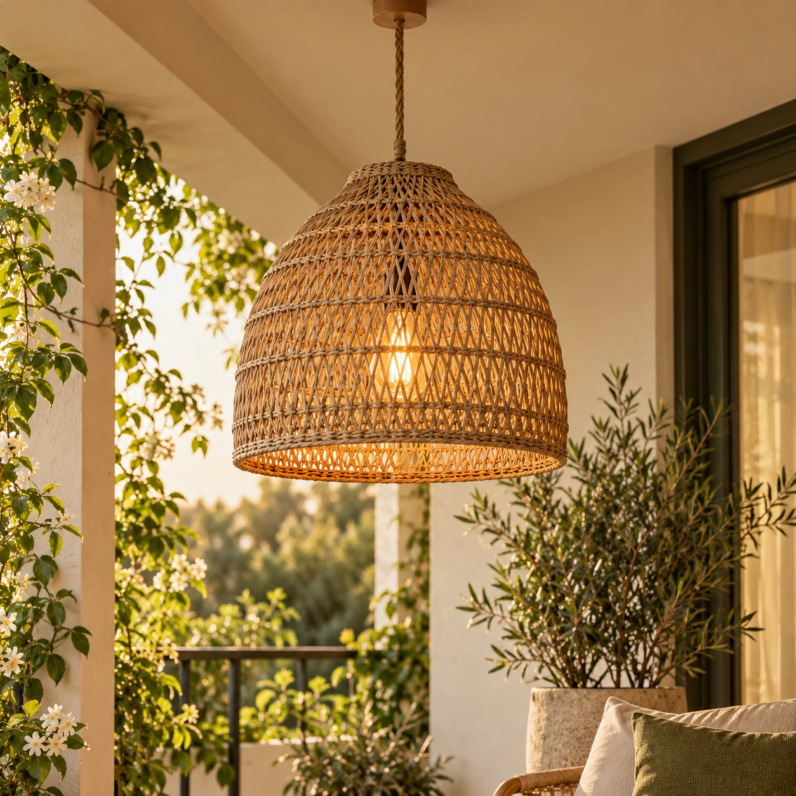
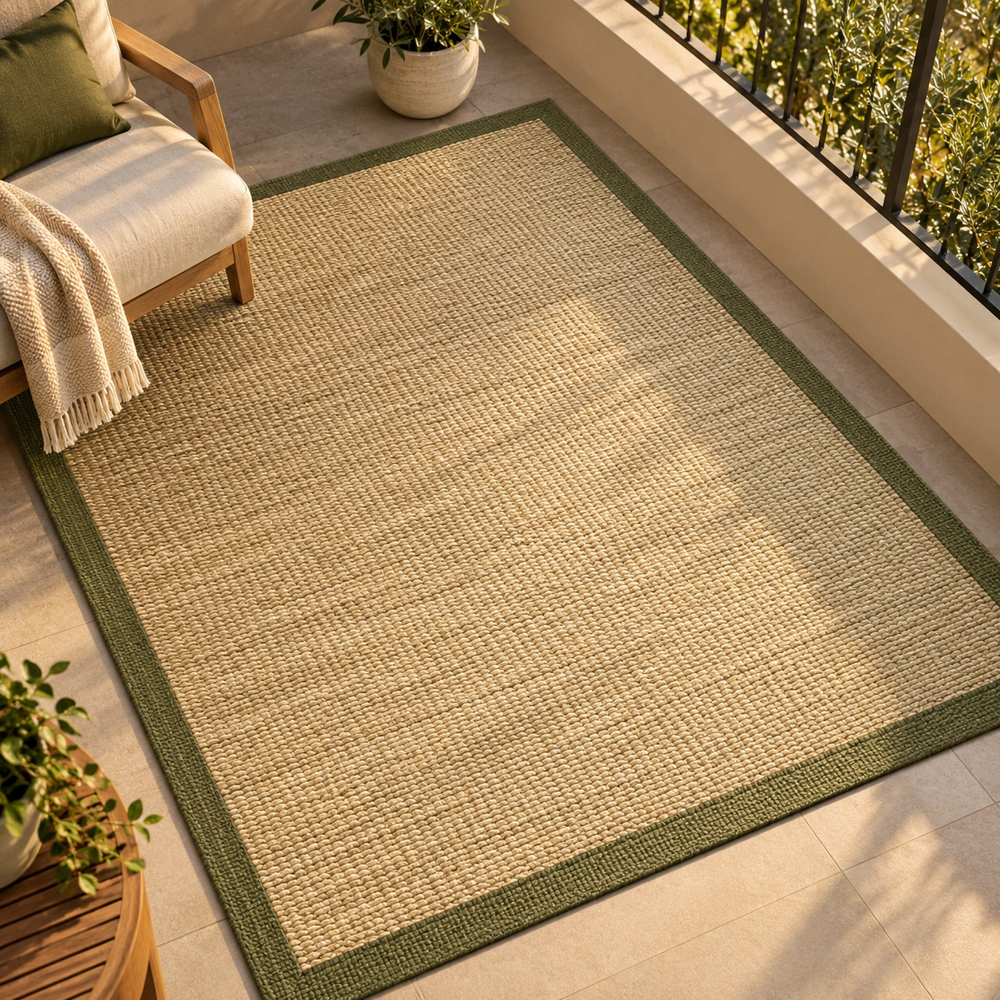
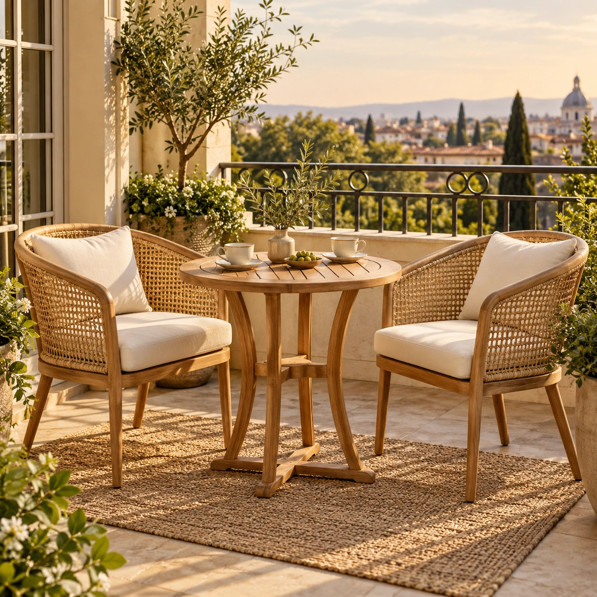
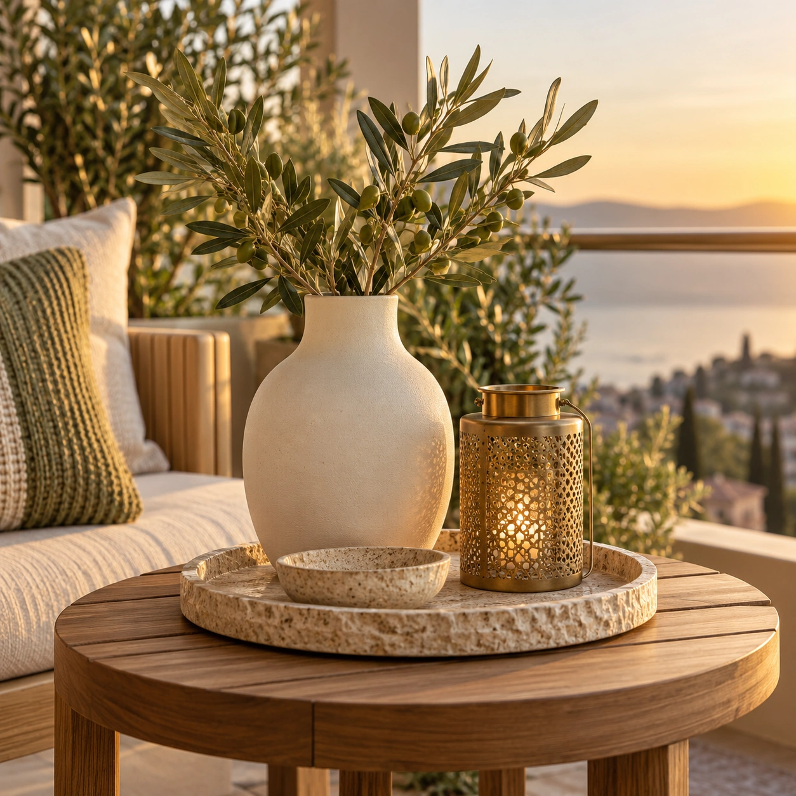

A little life
Plants in beautiful pots, selected for the light, wind and care your balcony can support.

Explore plants & pots ↗Beyond the laundry rack is a morning chai ritual, a leafy reading nook, or your favourite table for two. Let’s find the balcony you’ve been missing.
Find my balcony personality ↗Take a look around ↓
01 It became a place to store things.
02 You have ideas, but no idea where to start.
03 A full renovation feels like too much.
Start with a purpose. Build a beautiful nook around it.
Seven feelings. Seven beautifully considered spaces.
Find the moment you want to make room for.
Seven signature designs inspired by our catalogue. Each image is an AI-created illustration; confirm product dimensions, finishes, weather suitability and placement for your own balcony.

DESIGN CONCEPT · NOT A COMPLETED PROJECTTwo cups. A fresh breeze. A slower start before the world wakes up.
A compact table, comfortable seating, potted greenery and warm light.
Real plants bring a living, changing element to your home. Grow a pot of mint for your chai, watch a new leaf open, or simply enjoy a leafy view. Your design begins with how you want to use the space.
Each element earns its place.
Comfort, greenery and atmosphere come first.
Plants in beautiful pots, selected for the light, wind and care your balcony can support.

Explore plants & pots ↗Fairy lights and hanging lights suited to the exposure and installed with a safe power plan.

Explore lighting ↗Premium outdoor matting chosen with drainage, maintenance and weather in mind.

Explore rugs & carpets ↗A compact table and chairs, or floor seating, with enough room to move comfortably.

Explore tables & chairs ↗Cushions, trays and decorative accents that bring the mood together without crowding the space.

Explore decor ↗Style inspiration shown above. Browse each category for exact product options.
Choose a planning budget. Your final proposal should show quantities, product prices and service costs clearly.
Illustrative planning bands, not priced packages or offers. Scope and availability require confirmation; tax, delivery and installation must be itemised in the final quote.
Choose how you want to use your balcony, your budget and who will enjoy it.
Measure the length and width, take photos, and note sunlight, rain exposure and sockets.
Agree a layout, product list, care needs and itemised quote before a makeover begins.
Coordinate the setup, style the details, and settle into your new favourite corner.
Tell us about your space and your everyday rituals. Get a personalised starting concept, practical fit notes and a brief you can keep.
No perfect balcony needed.
Just a little possibility.
Balconia is an AI-powered balcony makeover company. We turn ordinary, unused balconies into green, beautiful spaces you'll actually want to spend time in.
We design and transform balconies using natural plants. You see your new balcony before we start, and we bring it to life quickly, without the usual cost and effort.
In most homes, the balcony is the most underused space. It's a hidden gem: with the right design, it can become a calm corner for your morning tea, a mini garden, or a place to unwind.
It doesn't have to be. Most options available today are costly, if you can find one at all. Balconia offers budget-friendly makeovers so more homes can enjoy a green balcony.
We use AI to instantly show you how your balcony could look after the makeover. You can see the design before any work begins, so there are no surprises.
Once you approve the design, we aim to complete the execution in a single day.
No. Gardening setups are usually labour- and time-intensive. Our team handles the work, so you get the result without the hassle.
We use natural plants, including oxygen-rich plants, herbs, and flowers. We can also set up space for growing your own organic vegetables.
Yes. We can design your balcony to grow organic vegetables and herbs, so you can enjoy fresh, home-grown produce.
We share guidance on your plants and balcony care, so you understand what you're growing and how to keep it healthy.
Friendly staff, on-time delivery, instant visualisation, one-day execution, and a makeover that brings you closer to nature.